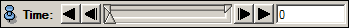
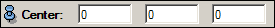
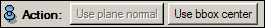
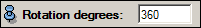
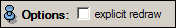

The time slider is used to animate the rotation. Press the play buttons on the left or right of the slider to play backwards or forwards, or click anywhere on the slider to jump to the respective time step. By right-clicking on the slider and selecting Configure you can change the slider increment in order to adjust the speed of the animation. (Please note that this increment value will have no effect if the RotateObject module is driven by some other module like MovieMaker or DemoMaker.) For more details please refer to the time port documentation.
Axis

Specify the X, Y, and Z components of the rotation axis vector. The
vector will be normalized automatically. E.g. values of 0 1 0 will
rotate the object around the Y axis of its local coordinate
system. You can also set the values of the rotation axis by attaching
a normal plane and pressing the Use normal plane button.
Center

Specify the X, Y, and Z
coordinates of the center of rotation. This can be set automatically
to the object center by clicking on the Use bbox
center button.
Action

Use plane normal:
if you have connected a planar module via the Normal plane connection, you can set the
rotation axis to the normal vector of that plane by pressing this
button.
Use bbox center: if you have connected a spatial data object
via the Data connection, you can set the center of
rotation to the center of the object's bounding box by pressing this
button.
Rotation degrees

Specify the amount of
rotation in degrees, e.g. 360 degrees for one full rotation.
Options

explicit redraw:
switching this toggle on will cause the module to explicitly call a
"viewer redraw" command whenever the value of the time slider and
rotation is changed.